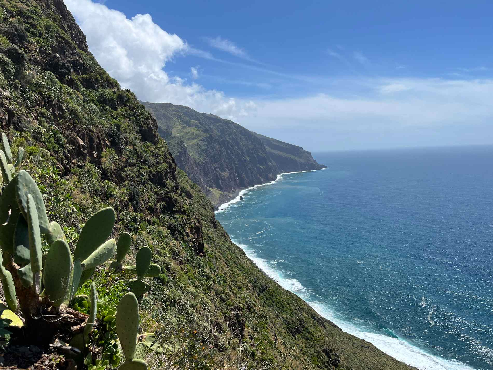
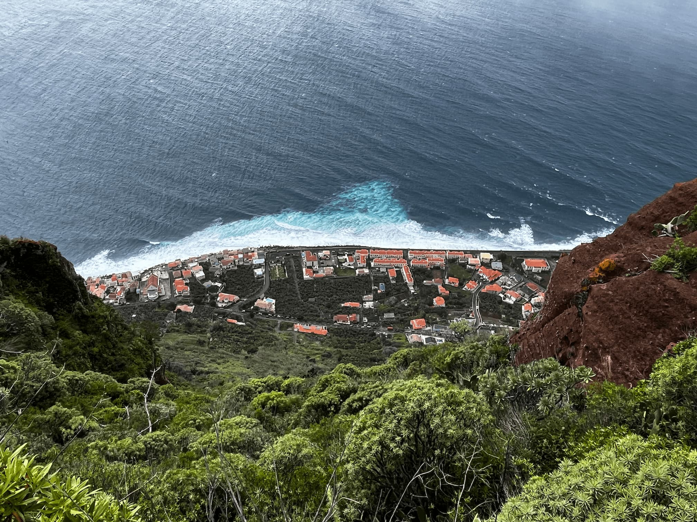
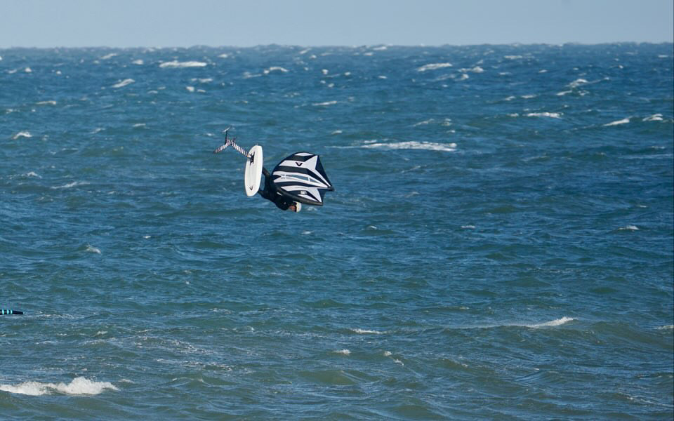
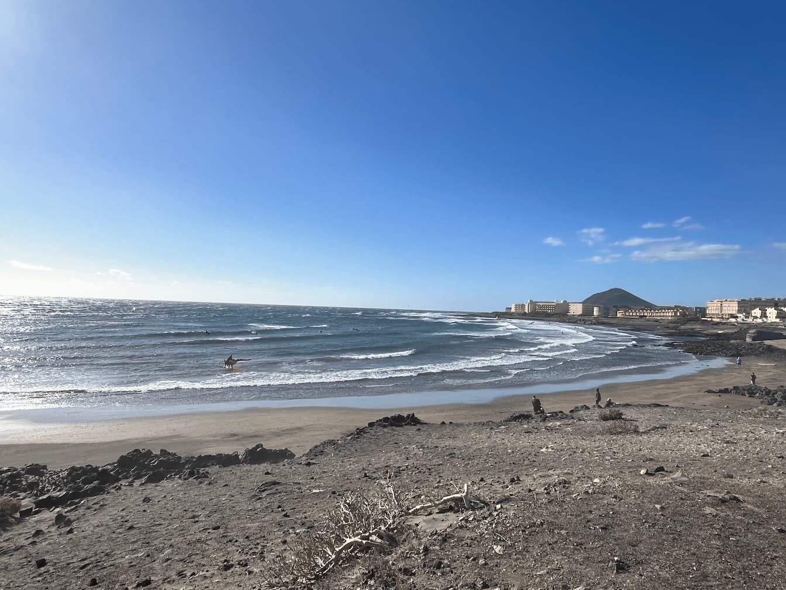
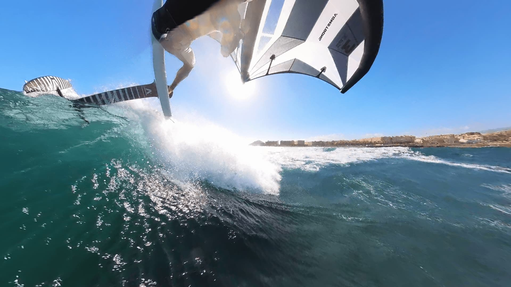
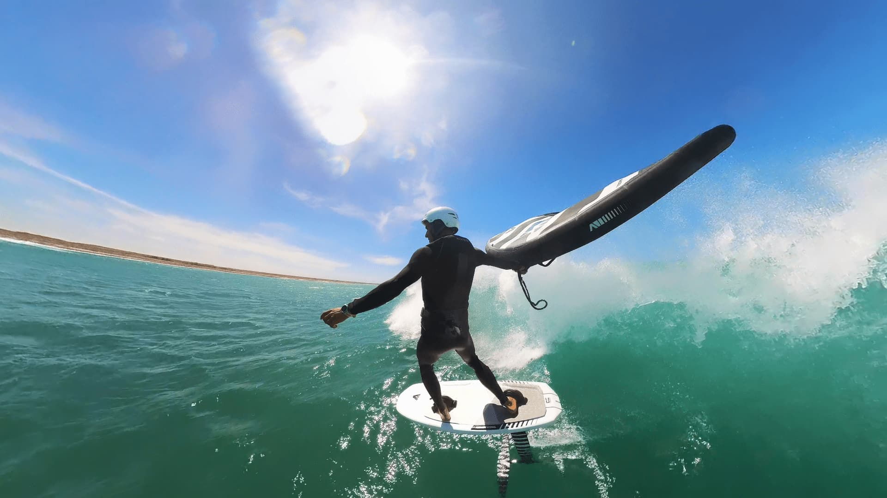
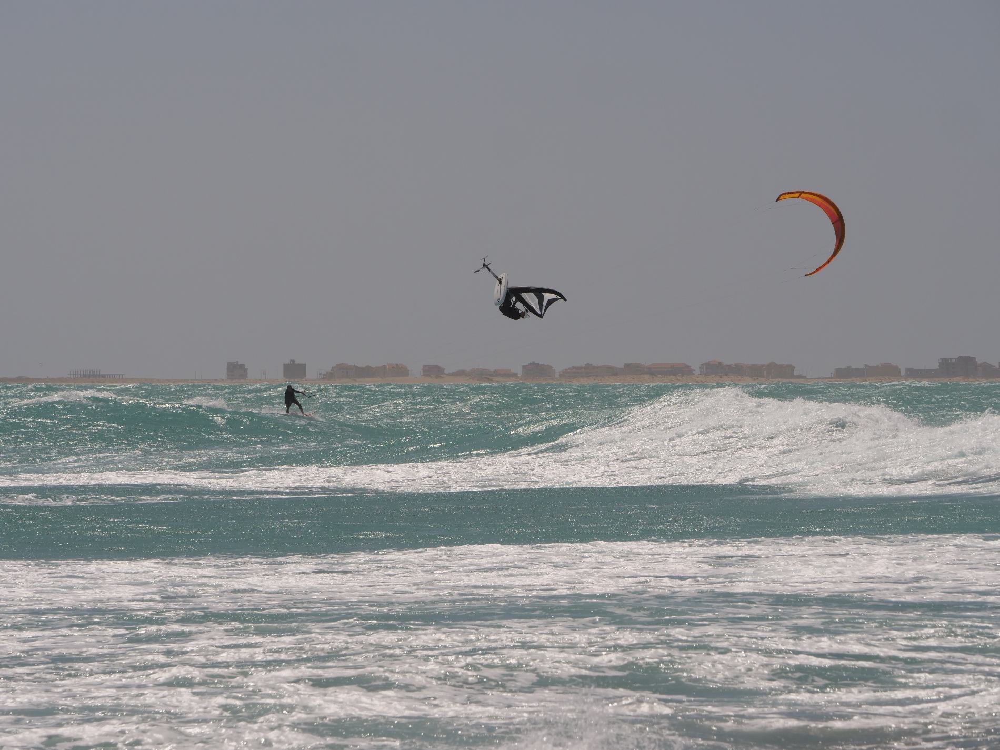
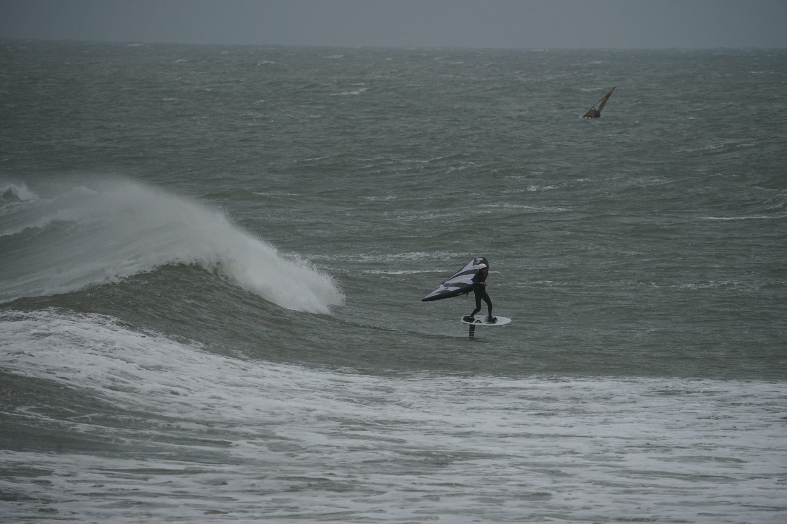

Madeira · Tenerife · Cape Verde · The Netherlands
WORLD CLASS Spots.
Fly in. I'll show you everything else.
Scroll
Madeira · Tenerife · Cape Verde · The Netherlands
Fly in. I'll show you everything else.
The concept
Some of the best wingfoil spots in the world are in places most people visit anyway — Madeira, Tenerife or Fuerteventura on the Canary Islands, Cape Verde Sal or Boa Vista. The difference between a frustrating session and the best ride of your life is knowing where and when to go and get in, how the currents and tides are influencing the spots and what to watch out for.
Get inspired and stay safe, follow me — I'll show you the way.
You fly in on your own terms with your own gear, stay where you like, and I meet you at the spot or pick you up and we drive together to the spot. You can be alone or with buddies.
Full spot knowledge, on-water coaching, video feedback, and sessions built around the conditions that day — not a fixed programme.
This is a pilot offering — I'm building out these experiences now and taking expressions of interest for 2026/2027. First to register gets priority spots and earns a say in how it's shaped.
Entrances, exits, hazards, wind shadows, tide windows — every detail of each spot.
In-water filming and post-session video analysis. You leave with footage and feedback.
Secret launches, local knowledge, gear hire contacts — the things that take years to learn.
Stay where you want, travel on your schedule. I'm a guide, not a package tour.
Every experience includes
Everything you need to make the most of a world-class spot.
A full briefing before we hit the water — wind patterns, entry/exit points, wave reading, local rules and etiquette. I get in first so you can have a look at how and where.
I'm in the water with you. Real-time tips, positioning advice, and knowing when to push and when to hold back.
Action footage of your sessions. Good for memories. Better for coaching. You keep everything.
Sit-down review of your video with specific feedback and a drills plan to take home.
I track the forecast and tell you which spots are firing each day. Decisions based on real experience, not guesswork.
Gear hire, repair contacts, best coffee, breakfast, lunch and dinner places — the practical stuff that makes a trip run smoothly.
The destinations




Volcanic coastline · Swell-fed waves · Year-round wind
Madeira is raw, dramatic, and one of the most underrated big wave wingfoil destinations in the Atlantic — few people come to wingfoil here. The island's rugged north coast takes swell from the open ocean, creating consistent waves in a landscape that looks like nowhere else on earth.
The coast is unforgiving and the waves in the winter months are big — as in >3m. Wind is mostly reliable depending on the season. Best not to go alone on these days.
The key is knowing which coast is working on any given day. I've spent time here building knowledge of different spots — the launches that look sketchy but are fine, the ones that look perfect and aren't, and the windows in the forecast that make everything click.
I spend quite some time there so get in touch and we can look at calendar dates.




Consistent NE trades · Flat water bays · Wave spots · Downwind
Tenerife has everything — reliable northeast trade winds, spots that suit every level from glassy flat-water bays to proper waves all at El Médano. It's also one of the most accessible islands in the Canaries, with year-round warm weather and direct connections from everywhere in Europe.
The wind when it's on is on, really nuking — high jumps or downwind runs with small gear are frequent. I used my 2.0m² this winter two days in a row and still was quite overpowered...
The waves can be small or bigger, but the spot is really gentle and easy as it has sand beaches, not much current and few rocks — only at El Cabezo.
A must if you like warm weather, 80% wind days and good food. A very big watersport community and great people.




Legendary trade winds · World-class waves · Sal
Cape Verde — and particularly Sal island — has been on the radar of advanced water sports riders for decades. The trade winds are among the most consistent on the planet, and the waves that wrap around the volcanic coastlines are genuinely world-class. The kite and usually first Wave Wingfoil world tour stop is right here at Ponta Preta.
This island has it all — beginner spots, advanced safe spots up to the scariest waves you will want to ride. It's where you come when you want the real thing, or feel you need some warm weather, relaxed vibe and progress every day of your trip.
The island of Sal has flat water lagoons at Santa Maria alongside mild to serious wave spots at Ponta Leme and serious wave spots within a few kilometres on either sides of the island.
We do need a pickup but can share fitting up to 4 in a pickup.




North Sea swell · Nordic atmosphere · Raw coastline
Klitmøller — Cold Hawaii — is one of my favourite spots alongside Hanstholm and Voropør, the waves are world class and there's plenty of space. It is also pretty safe and relatively easy to get in and out.
The name is no accident. This stretch of the Danish coast receives real North Sea swell with consistent westerly winds and a raw Nordic atmosphere that's unlike anywhere in the Mediterranean.
Come by camper, there's a great community — or rent a summer house with some friends, or get in touch with me so I can ask my local friends for accommodation options.
If you're visiting Denmark, or want to combine a spot experience with a full coaching programme, this is where it all connects. You can do a standalone spot experience, or pair it with a multi-day coaching block.
Let me know when you plan to go, I can be up there for the forecast in a day or two depending on traffic.
The process
Simple by design. You stay in control, I bring the knowledge.
Tell me your destination, dates, and level. I'll confirm availability.
Fly in on your own terms. Stay where you like. Full flexibility.
We connect before you fly. I share a spot guide, gear list, and conditions outlook.
I meet you at the spot. We session, I coach, I film. Every day built around the conditions. I meet you at the spot or we drive together.
Video footage, analysis notes, and the confidence to ride these spots again on your own.
You can ask me to coach you 1 on 1 or a group — share the stoke.
This is a pilot
I'm taking expressions of interest now to shape the first Explore experiences. First to register influences the format, gets priority access, and earns early-bird pricing when spots open.